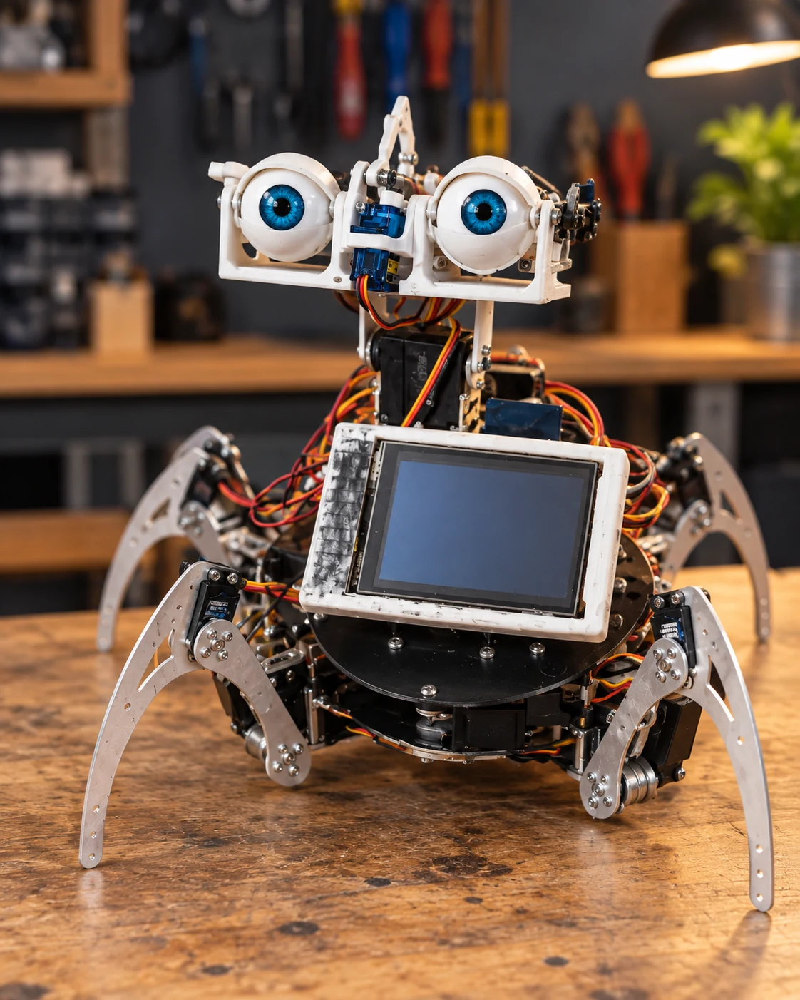
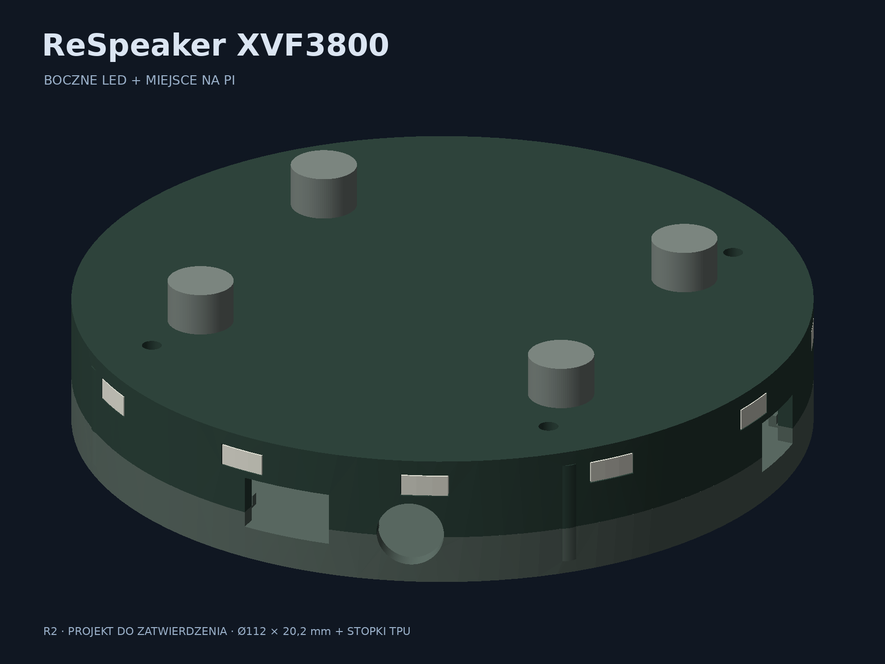
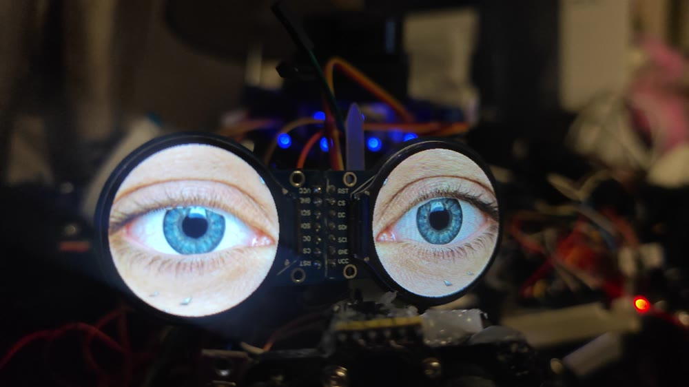
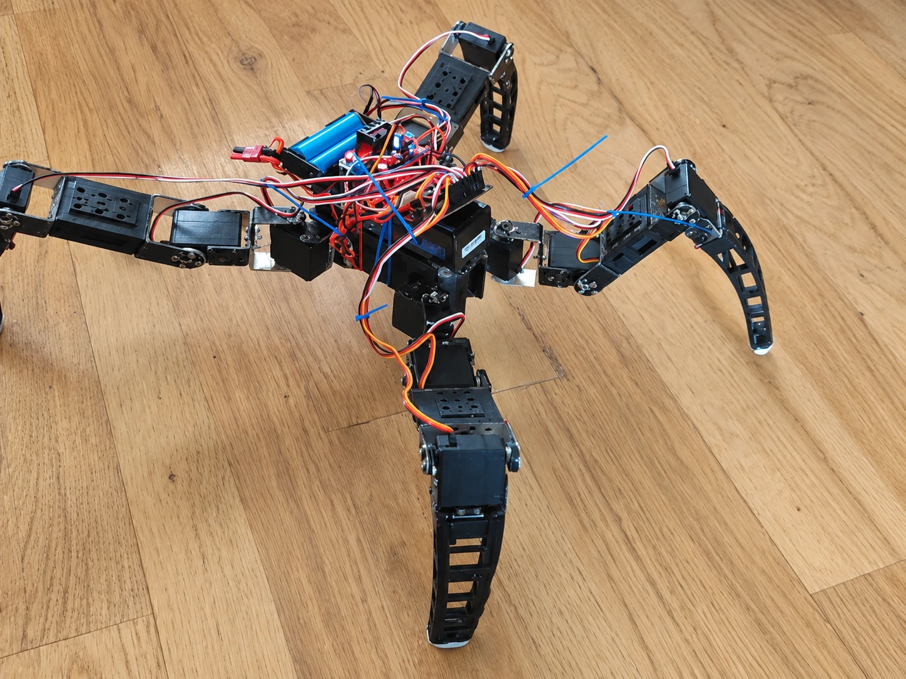
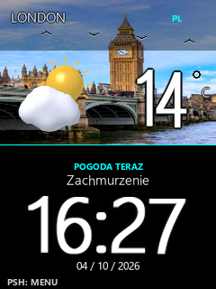
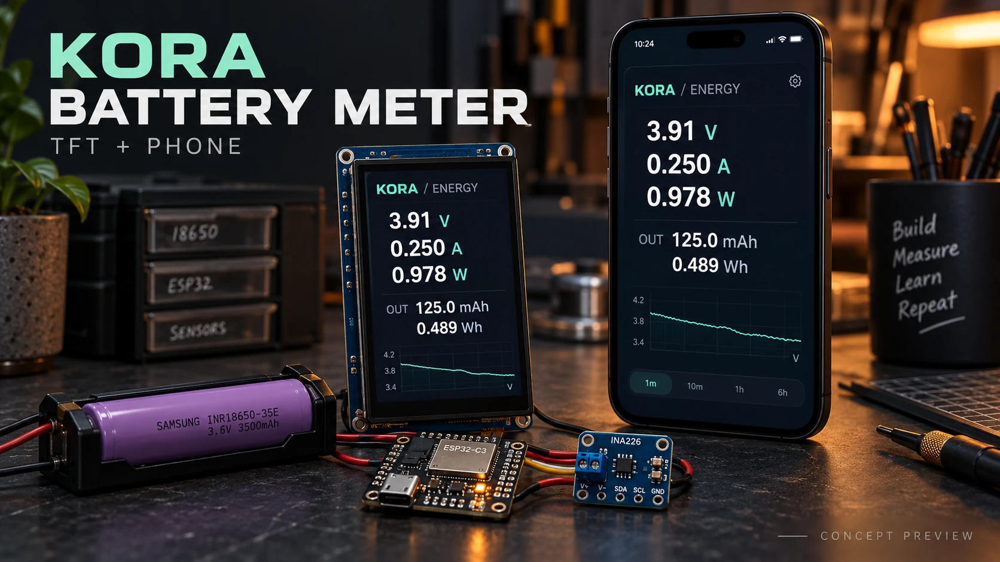
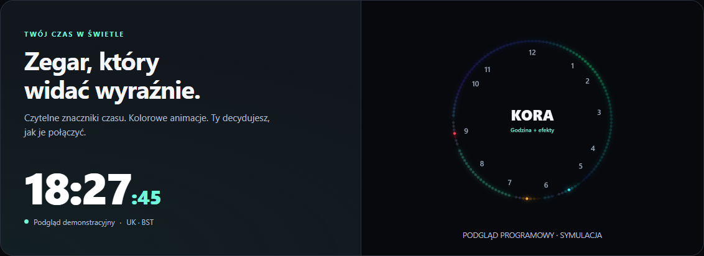
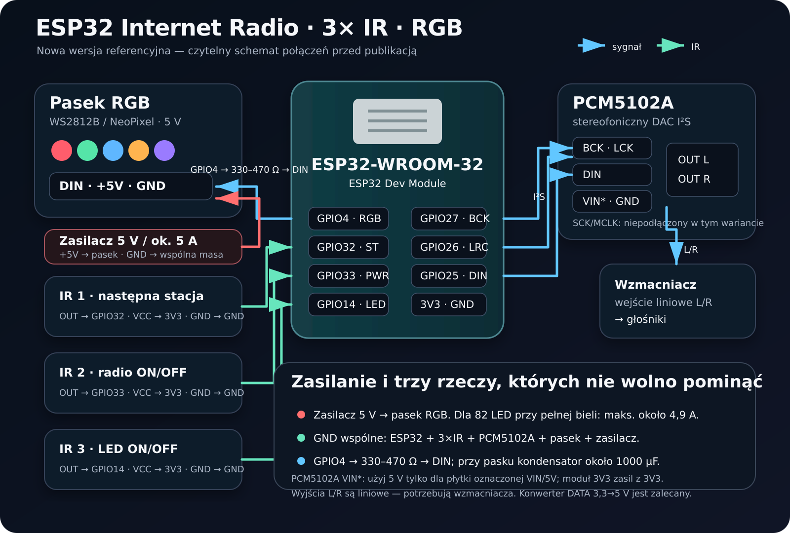
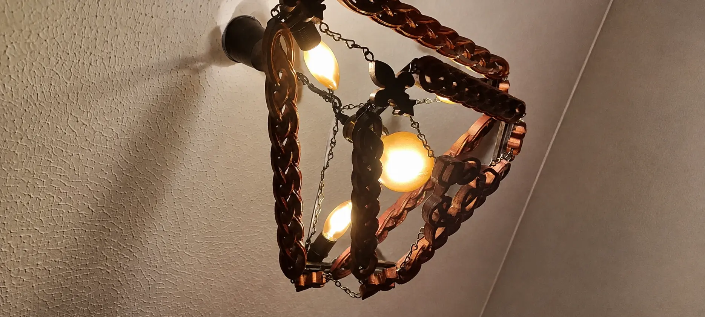

Znajdź swój
następny projekt.
Roboty, elektronika i części do druku 3D. Zdjęcia, kod i instrukcje — wybierz projekt i zobacz, jak powstaje.

POZNAJ KORĘMechanika.Elektronika.
Charakter.Zobacz robota
Robotyka i druk 3D
6 projektów
ReSpeaker XVF3800 · R2
Dwie pokrywy, boczne mleczne wkładki LED i stopki TPU. Cztery tacki do druku.
Otwórz projektPi 5 + Hailo-10H
Obudowa z wentylatorem i pierścieniem LED. Pliki oraz generator.
Otwórz projekt
Oczy Kory
Publiczne warianty animowanych oczu, kod i instrukcje.
Otwórz projektKora — konstrukcja
Zdjęcia, mechanika i etapy budowy robota.
Otwórz projekt
Kora czworonożna
Sterowanie i kod projektu.
Otwórz projektKora: nie jestem robotem
Ekran przygotowany do nagrania.
Otwórz projektElektronika i projekty użytkowe
6 projektów
Stacja pogodowa i gry
Kod, połączenia i obudowa.
Otwórz projekt
Miernik baterii
Napięcie, prąd i energia na TFT oraz telefonie.
Otwórz projekt
Zegar KORA
Zegar świetlny i dokumentacja projektu.
Otwórz projektZegar VEGA · wcześniejszy adres
Archiwalny adres prowadzący do aktualnego projektu zegara KORA.
Otwórz projekt
Radio internetowe
Radio na ESP32 i sterowanie podczerwienią.
Otwórz projekt
Lampa RGB
Projekt lampy i sterowania oświetleniem.
Otwórz projektPozostałe realizacje
2 projektówBrak pasujących projektów.
Zmień hasło lub wybierz inny dział.